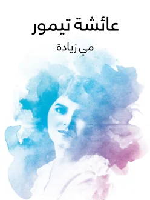

عائشة تيمور

قراءة عربية أصلية محددة النطاق في الصفحات 11، 12 من ملف PDF المرتبط، وليست تلخيصا كاملا للكتاب. نناقش ما تدعمه هذه المقاطع فقط.
السيرة الأدبية تتجاوز الاحتفاء بالاسم
تشرح مي زيادة في البارق في الظلام كيف قادتها دعوة إلى محاضرة إلى البحث في آثار عائشة تيمور وما تيسر من أخبارها. تعترض ضمنا على الاكتفاء بمعرفة أنها شاعرة دون فهم شاعريتها، وتريد وضعها بين أدباء عصرها لا داخل فئة النساء وحدها. الغرض المعلن جمع القراءة بالتعريف والتقويم.
زاوية وحدود القراءة
هذه قراءة في بداية الفصل الأول، لا حكما نهائيا على ريادة تيمور أو تاريخ الحركة النسائية. لغة الظلام واليقظة استعارة تقويمية تحتاج إلى موازنتها بأصوات وتجارب أخرى. والسؤال الذي تحث عليه المقدمة هو ما الذي يثبته تحليل العمل نفسه بعد أن ينتهي الثناء على سبق صاحبته.
الطبعة والقراءة
نسخة إلكترونية مجانية من مؤسسة هنداوي عبر صفحات. رابط PDF من خادم الناشر يرسل الملف للتنزيل، ولا نستضيف الكتاب. هذه النسخة من الكتاب صادرة ومتاحة مجانًا من مؤسسة هنداوي بشكل قانوني؛ حيث إن نص الكتاب يقع في نطاق الملكية العامة تبعًا لقوانين الملكية الفكرية.
تنزيل PDF المجاني ↓ القراءة والمصدر الرسمي ↗